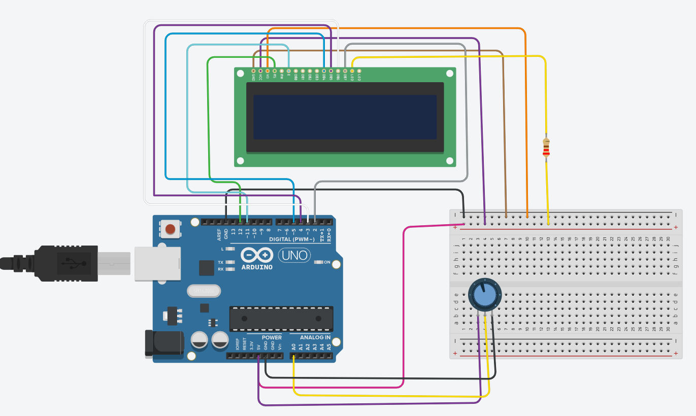

Sección 1
El circuito conecta la placa Arduino con una pantalla LCD 16x2, utilizando un potenciómetro y una resistencia para controlar la visualización de la información en pantalla.
El Arduino actúa como unidad de control del circuito: envía datos y comandos a la pantalla LCD a través de sus pines digitales, indicándole qué texto mostrar y en qué posición hacerlo.
El potenciómetro se utiliza para ajustar el contraste de la pantalla, mientras que la resistencia limita la corriente que llega a la LCD, protegiendo el circuito. Todo el montaje se realiza sobre una protoboard, alimentada desde el propio Arduino.
El circuito se arma siguiendo un orden lógico de conexión entre el Arduino, la pantalla LCD y los elementos de ajuste:

Espacio adicional para una fotografía del circuito armado físicamenteEl Arduino ejecuta un programa que envía, a través de sus pines digitales, las instrucciones y los caracteres que deben aparecer en la pantalla LCD. Mediante la librería de control de la pantalla, el Arduino decide en qué línea y posición se escribe cada dato.
El potenciómetro permite ajustar manualmente el contraste hasta que el texto se vea con claridad, mientras que la resistencia mantiene estable la corriente que alimenta la retroiluminación de la pantalla.